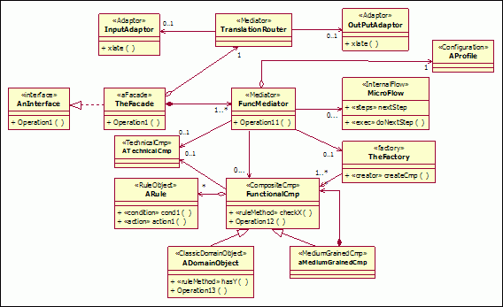

| Рекомендация: Service Component Patterns |
 |
|
| Связанные элементы |
|---|
IntroductionIn decomposing a service component into its constituent functional and technical components, we have delegated the functionality provided by the service component to fulfill the subsystem’s functional responsibilities. Functional components supply the business functionality required, while technical components provide generic functionality such as authentication, error handling, auditing, logging, etc which are operational and non-functional oriented. A service model is a design-time artifact. As such, it does not deal directly with the implementation of services. However, the actual implementation of a service or set of services is strictly performed by a service component's realization of a service specification. The service specification provides the implementation contract; the technology or techniques used to implement the service are irrelevant as long as the contract is fulfilled. In the concept Service-Oriented Architecture, we introduced the following picture demonstrating the relationship between the services we identify and the components and objects that provide the implementation of these services.
In this way, we can see how the RUP Design Model can be used to capture the design of the component and object layers, with implementation models and artifacts capturing details of the object layer and associated implementation and deployment artifacts. Important aspects of the relationship between the Service Model and the component design model are that the set of service specifications represent contracts that must be fulfilled, operations identified on specifications must be implemented as-is, and that consumers of services are using this same model to understand the interface and behavior of the services they expect to use. As such, there is a direct and in general a one-to-one relationship between the service specification and some implementation artifact that acts as the initial implementation entry point for the service. For example, consider the following diagram of a service provider showing the details of model elements used in its definition.
The key to the use of the service component is that it should be directly traceable to the service model. The easiest way to accomplish this is to make use of the fact that the service specification element is a UML Interface that can be realized by the service component, thus ensuring its conformance to the structural specification. In this way we would get the following result:
It is now the responsibility of the component implementer to define a set of components and classes that provide the behavior of the resulting component. Kinds of Service ComponentsFunctional ComponentsThe composition of these functional components into a larger-grained service component is not merely structural; it also involves the definition of flow, that is, the collaboration of the functional components to provide functionality to support the business processes. As we have seen earlier, the functionality of these business-related components is enabled through the services (implemented by the component’s finer level object or legacy system structure) defined. It is important to note that this step includes traditional OOAD activities. We have a focused and well-partitioned scope to direct the object design. In traditional object-oriented design, we tend to create larger more dependent object graphs, whereas if subsystem analysis follows the identification of functional areas within the business, we have a very clearly defined scope to focus on and direct our design energies towards. These results in a set of more loosely coupled object models (class diagrams and sequence diagrams triggered by system use cases). Technical componentsThe composition of technical components into larger-grained service components occurs in the same fashion as functional components. Technical components such as authentication, logging and reporting may be used across business processes. These common components are needed to form the infrastructure to support the functional components. One of the key variations across business processes is due to business rules as shown below in figure "Enterprise Component Pattern". These variations are typically captured during Variation-Oriented Design. Service Component PatternsHaving said that the service component simply realizes the service specification does not provide the implementer with much assistance in going from a coarse-grained service definition to a set of fine-grained implementation classes and artifacts required to provide the behavior of the service. In this regard, it is common to rely on patterns that provide structure to the resulting service component, either as a starting framework or specific patterns to address particular policy requirements. Pattern choice, driven by NFR, architecture [more] Note that the additional stereotypes introduced here are described in the Artifact: Service Component. Base Service Component PatternIn defining the initial structure of a service, the following pattern is provided as a starting point for customization and completion.
The elements of the pattern are:
The following demonstrates the composite structure view of this pattern. In this case, the facade is delegated to by the service component itself. As such, consumers calling operations on the service component are actually serviced by the facade component. Note that it would be possible to use UML 2.0 ports as well to expose the interfaces and make this delegation explicit using connectors.
Single Operation Service Component PatternIn some cases where services are identified in the Service Model with multiple operations, it is more appropriate to implement the operations individually as stand-alone services separating the logical service and physical service views. Such a pattern has advantages in terms of flexibility of sourcing, high availability, versioning, and evolution but does lose the notion of an interface to a service as a set of related operations. Modeling service components according to this pattern has a single <<Service Component>> realizing a single interface with a single operation, all named according to common conventions and demonstrated below.
In this case, as we mentioned, there is no direct realization of the original service specification by any one element in the pattern above. Therefore, it seems worthwhile to introduce an element in the model that can provide traceability back to the service specification. In the example below, we have introduced a component, stereotyped <<subsystem>> that is noted as implementing the service specification and also owning the elements described above.
This pattern also does not introduce the <<facade>> component because consumers of the services are responsible for identifying the services they use. Mediated Operation PatternWhere there is the possibility that a service consumer's request may be routed to one of a selection of operation components for execution, it is possible to extend the pattern with a mediator to route these messages, as shown below. Note we stereotype the component/class as <<mediator>> for clarification. The exact mechanism used for mediation is undefined. A static set of implementations could be known ahead of time, a registry of some sort could also be used to map to the particular implementation based on the consumer, content of the request message, and so forth. This pattern is not intended for use with the single-operation pattern shown above.
This also affects the composite structure view of the service component; as shown below, the mediator connection is shown from the facade which uses it to direct calls to the operation components.
If a registry, external to the mediator itself, is used, it is not necessarily possible to show static usage dependencies from the mediator to the operation components or connectors between parts in the composite structure diagram. So, how can we model a dependency from the mediator to the mediated operation components? In the following diagram, we have introduced an interface to be implemented by each operation component. We can then model the usage from the mediator to the interface, as shown below.
We also change the relationship in the composite structure diagram, including a new part typed by the interface, and denote the multiplicity between the mediator and operation components on the connector, as shown below.
Data Access ComponentsAdditionally, where service operations share common data requirements, it may be useful to highlight the specific components providing data management capabilities to the implementation. Note we stereotype the component/class as <<data access>> for clarification.
The Enterprise Component PatternThe Enterprise Component Pattern below shows the service component acting as a facade for the underlying functional and technical components. Services are exposed on the edge of the service component at the component facade. Requests for services on the facade are forwarded to a mediator which then routes the message to the appropriate functional or technical component.  Enterprise Component Pattern The dependencies and needs of the functional components to the technical components, for the Rent-a-car example, are depicted below.
Rent-a-car reservation service component using the enterprise component pattern The collection of subsystem component models is gathered into the functional component model which shows the reliance of the functional components on the technical components, and the inter-relationships between the functional components themselves. Leaf-level sub-processes that are assigned to the subsystem facade need to be specified as services the subsystem will provide. These sub-processes are supported and implemented through a finer grained set of system use cases encapsulated within the structure of the subsystem. The functional components are relied upon for the realization of the use cases. In turn the functional components depend on the technical components and utilities for their infrastructure needs. |


© Copyright IBM Corp. 1987, 2006. Все права защищены.. |